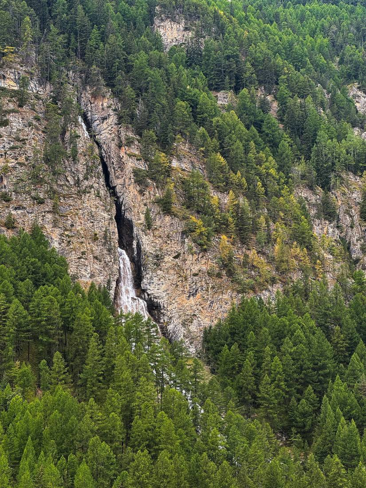
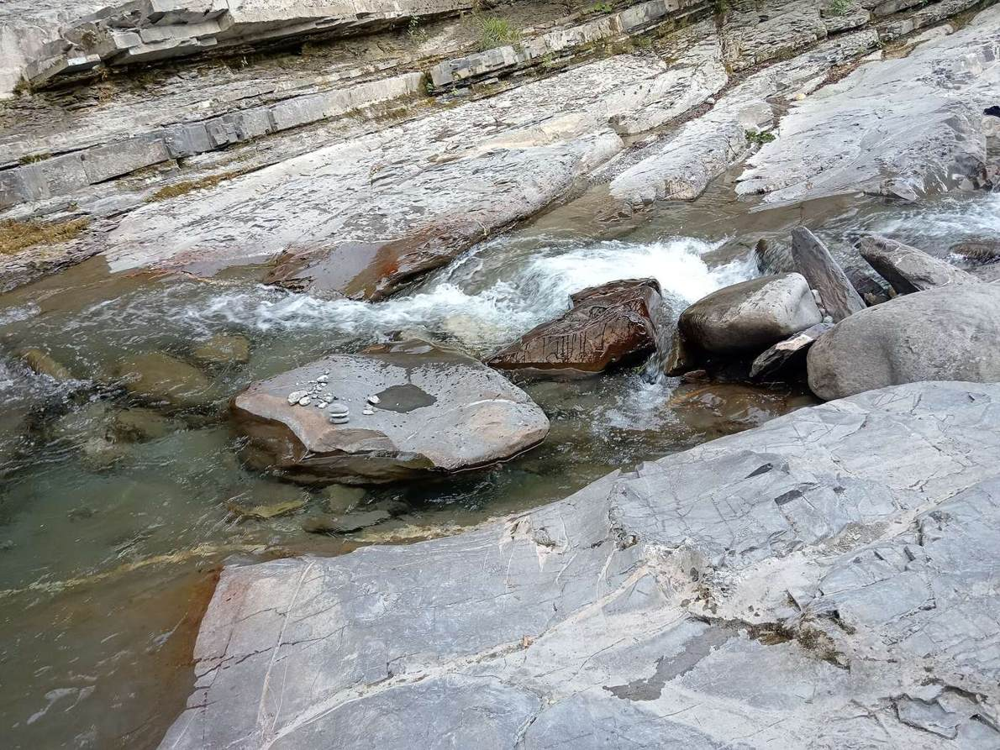
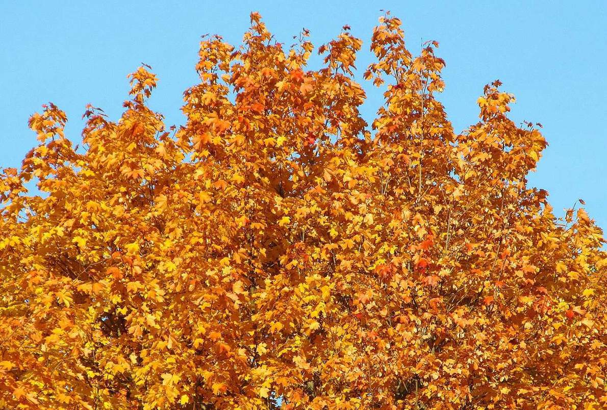

制作側の連想
雨水タンクの部位を、配置図にしてみる
このサイトは、庭先に置く一基の雨水タンクを真横から切って図にしたつもりで作りました。六つの部位に番号をふり、上の図と並べています。制作側の連想で、お店の理念・由来とは無関係です。実際の製品の仕様を示すものでもありません。
凡例
六つの部位
- 1ふたタンクの口をおおう、いちばん上の部分。図では上端に平らな板として描いています。
- 2流入口筒から水を受け入れる、斜めに差し込んだ口。図の左上に置いています。
- 3胴水をためる円筒の本体。図ではいちばん大きな、まるい箱の部分です。
- 4補強バンド胴にぐるりと巻いた輪っか。図では上下二本の帯にしました。
- 5水栓ためた水を出す小さな口と、ひねる取っ手。図では右下の低い位置にあります。
- 6あふれ口いっぱいになった水を外へ逃がす口。図では右上、ふたの少し下に出しています。
ギャラリー(イメージ)
六つの窓から、六枚の写真






写真はフリー素材のイメージです。お店のものではなく、お店で提供している商品を示すものでもありません。
ご案内
お店のこと(確認できたものだけ)
| 所在地 | 〒879-5102 大分県由布市湯布院町川上３０３７−１７ |
|---|---|
| 電話 | 準備中 |
| 営業時間 | 準備中 |
| 定休日 | 準備中 |
| ご予約 | 準備中 |
| 駐車場 | 準備中 |
| SNS | Instagram @yufuinmanamana |